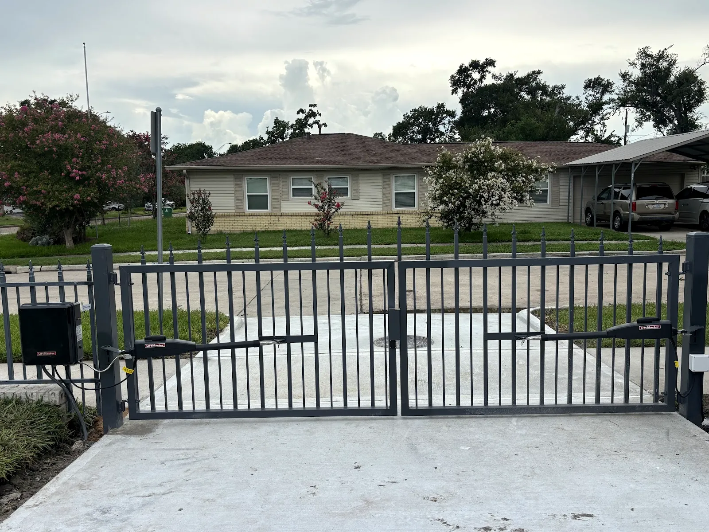
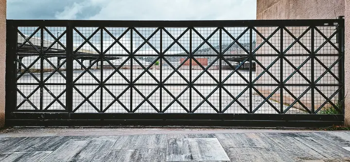
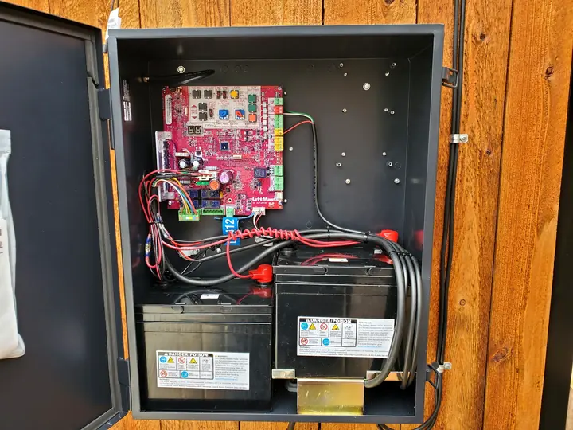
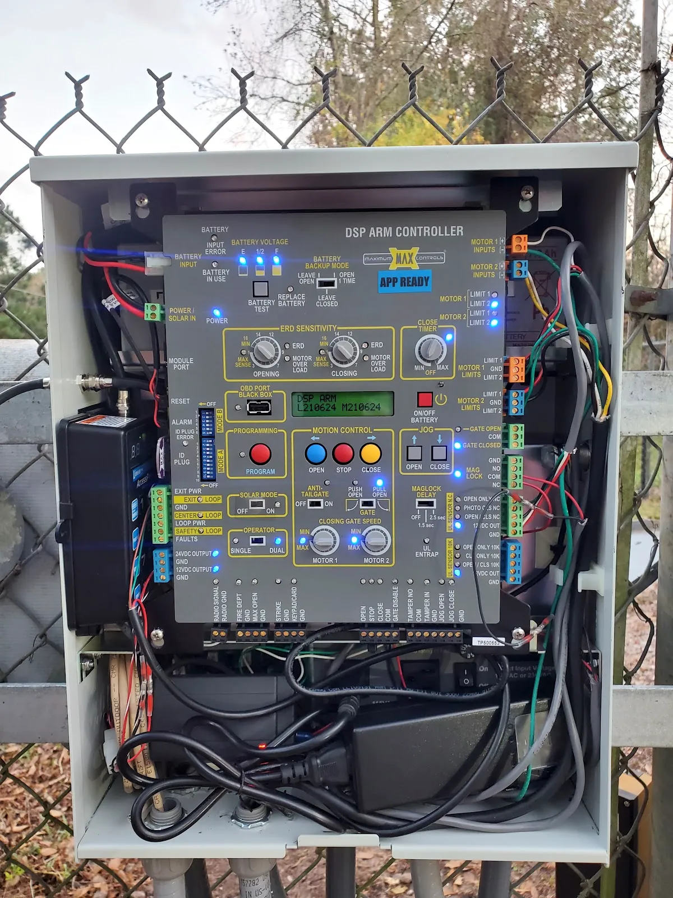
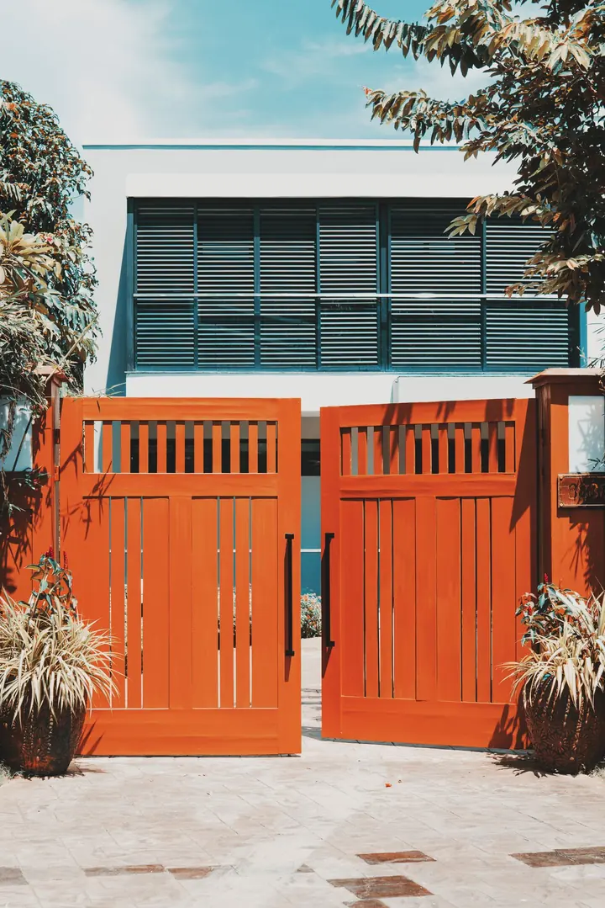
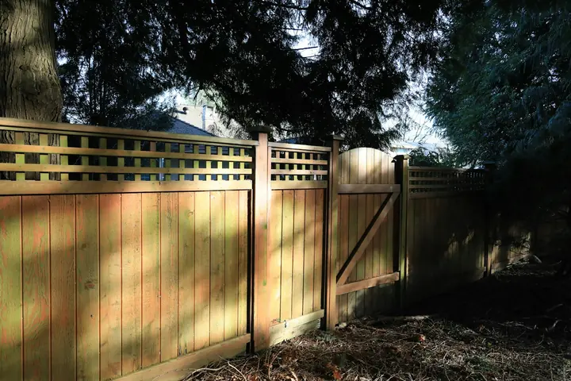
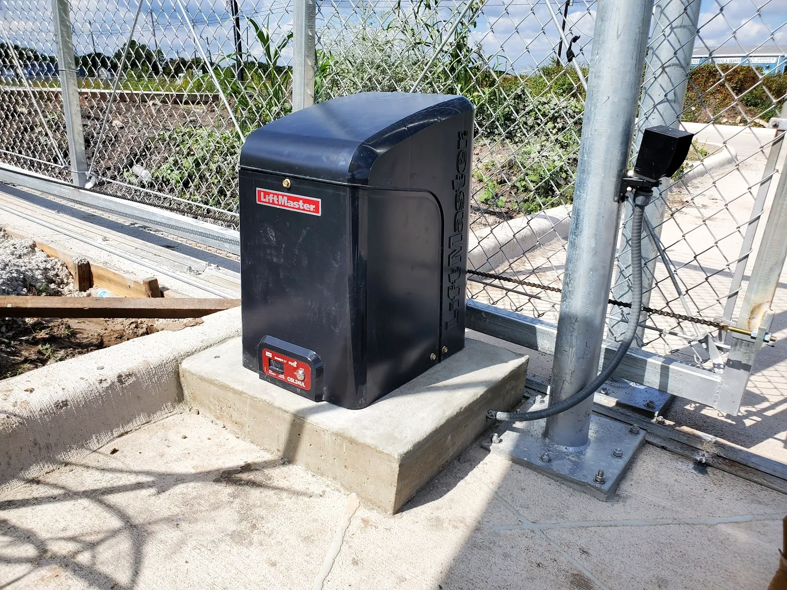
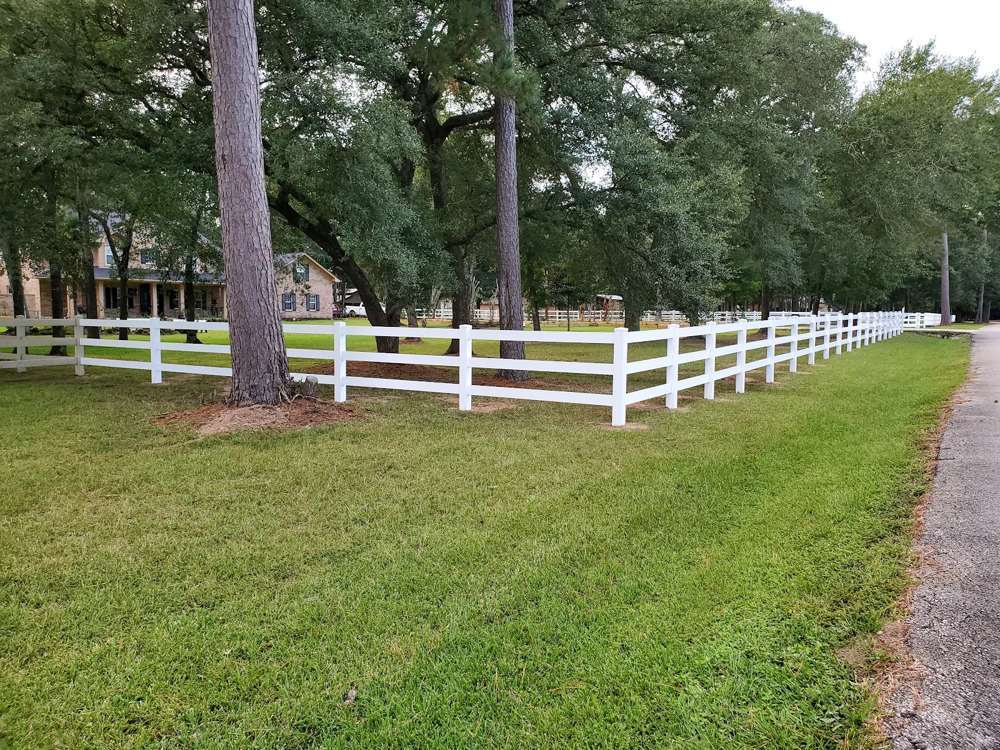
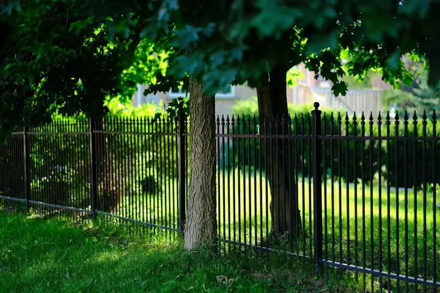

OPEN
New gates in
Automatic gate installation for driveways and commercial entrances: the gate, the operator, the wiring and the settings.
MENU · GATE OPEN

GATE 01 · STATUS: OPEN
Automatic gate installation, gate operator and control board repair, custom gates, fences and gate maintenance for homes and businesses across Houston, Texas.
OPEN
Automatic gate installation for driveways and commercial entrances: the gate, the operator, the wiring and the settings.
CLOSING
Gate operator and control board repair for gates that stall, reverse or stop answering the remote.
SECURE
Custom gates and fences, designed, built and installed for homes and businesses across Houston.
// THE BOARD · REV. HOU-TX
Almost every automatic gate runs through the same place: a control board in a box by the post. That is where most faults start, and where Authentix Gate Systems starts looking.
J1

Swing or slide, driveway or commercial lot: the gate, post, operator and settings in one job.
J2

Authentix photoBoards that have lost their settings, codes or outputs. The review topic that comes up: gate control system repair.
U1 · CONTROLLER

J3

Designed and built to suit the opening and the property, rather than ordered off a shelf.
J4

Residential and commercial fence lines, built to meet the gate.
J5

Authentix photoOperators on their pads, chains, limits, photo eyes and batteries checked and kept in order.
Text a photo of your operator// SERVICE AREA
Driveways, ranch entrances, commercial lots and fence lines, all around Houston, Texas. Tell them your part of town when you get in touch.
HOURS · AS LISTED ON GOOGLE
Live oak boulevard: illustrative stock photo.
// FENCES TOO
A gate hangs on a fence line, and the two have to agree: posts set where the gate needs them, rails at the right height, the conduit for the operator run before the concrete goes in. Building them together saves doing it twice.


// QUESTIONS
WHAT TO SEND
Common causes are a blocked or misaligned safety photo eye, a limit setting that has drifted, or a fault the control board is reporting. Many boards show a code or status lights. Take a photo of the board and text it to (713) 677-4243.
Remotes are paired to the receiver on the gate operator. Send a photo of the operator label and of the remote, and ask about adding or reprogramming them.
Many gate operators have backup batteries in the control box, like the two in the box pictured above, and most have a manual release. Ask to have yours checked so you know how it is set up.
A photo of the gate, a photo of the operator label, a line about what the gate is doing, and your part of Houston.
Yes. Authentix Gate Systems designs, builds and installs gates and fences for homes and businesses in Houston.
// GET IN TOUCH
Phone is quickest. Text suits a photo of the control board with the cover off. Email suits anything with a drawing attached.